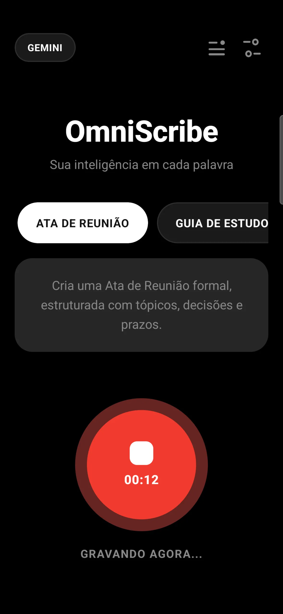
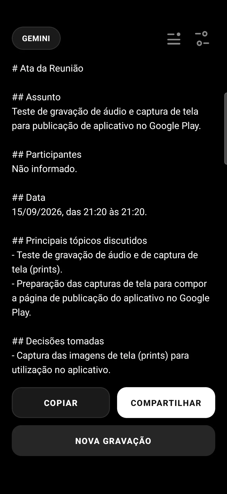

Na IDK Labs, transformamos ideias complexas em aplicativos nativos de alta fluidez. Conheça o OmniScribe.
Grave reuniões presenciais ou online com clareza.
Processamento com IA para entender o contexto.
Textos estruturados, prontos para compartilhar.
O OmniScribe está chegando às lojas. Estamos finalizando os últimos detalhes — fique de olho!


Abra o app e inicie a gravação.
A IA analisa e transcreve.
Receba a ata formatada.
A IDK Labs desenvolve ecossistemas mobile-first com React Native, integrações de IA e arquitetura escalável.